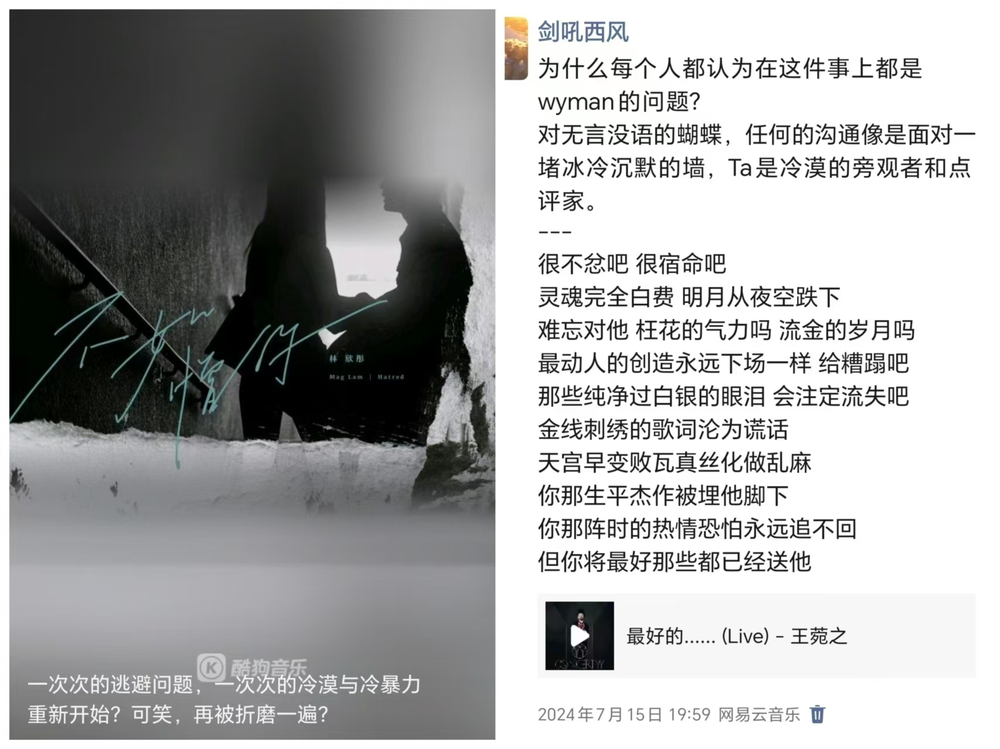

<!DOCTYPE html>


  <html lang="en">
    

    <head>
      <meta charset="utf-8" />
        
      <meta
        name="viewport"
        content="width=device-width, initial-scale=1, maximum-scale=1"
      />
      <title> 小熊的小站</title>
  <meta name="generator" content="hexo-theme-ayer">
      
      <link rel="shortcut icon" href="/favicon.ico" />
       
<link rel="stylesheet" href="/dist/main.css">

      
<link rel="stylesheet" href="/css/fonts/remixicon.css">

      
<link rel="stylesheet" href="/css/custom.css">
 
      <script src="https://cdn.staticfile.org/pace/1.2.4/pace.min.js"></script>
       

<script type="text/javascript">
(function(i,s,o,g,r,a,m){i['GoogleAnalyticsObject']=r;i[r]=i[r]||function(){
(i[r].q=i[r].q||[]).push(arguments)},i[r].l=1*new Date();a=s.createElement(o),
m=s.getElementsByTagName(o)[0];a.async=1;a.src=g;m.parentNode.insertBefore(a,m)
})(window,document,'script','//www.google-analytics.com/analytics.js','ga');

ga('create', '454934039', 'auto');
ga('send', 'pageview');

</script>


 
<script>
var _hmt = _hmt || [];
(function() {
	var hm = document.createElement("script");
	hm.src = "https://hm.baidu.com/hm.js?71ee62302f36ca8f840077a641705255";
	var s = document.getElementsByTagName("script")[0]; 
	s.parentNode.insertBefore(hm, s);
})();
</script>


      <link
        rel="stylesheet"
        href="https://cdn.jsdelivr.net/npm/@sweetalert2/theme-bulma@5.0.1/bulma.min.css"
      />
      <script src="https://cdn.jsdelivr.net/npm/sweetalert2@11.0.19/dist/sweetalert2.min.js"></script>

      <!-- mermaid -->
      
      <style>
        .swal2-styled.swal2-confirm {
          font-size: 1.6rem;
        }
      </style>
    </head>
  </html>
</html>


<body>
  <div id="app">
    
      
    <main class="content on">
      <section class="outer">
  <article
  id="page-"
  class="article article-type-page"
  itemscope
  itemprop="blogPost"
  data-scroll-reveal
>
  <div class="article-inner">
       
    <div class="article-entry" itemprop="articleBody">
       
  <link rel="stylesheet" type="text&#x2F;css" href="https://cdn.jsdelivr.net/npm/hexo-tag-hint@0.3.1/dist/hexo-tag-hint.min.css"><p>&emsp;&emsp;我一直认为，一切判断标准应以受害人的主观感受为准。因此，这封邮件不是为了否认或辩解，而是为了表达歉意，并尽力让我们的关系有一个温和的结尾。</p>
<p>&emsp;&emsp;对于最后一次你的回复，你用了一些严厉且沉重的词语。当时我感到这是对我的沉重指责，但我意识到我的行为确实给你造成了伤害。我为此感到非常抱歉。如果你觉得我可以做些什么来补偿或缓和这段伤害，请告诉我。</p>
<p>&emsp;&emsp;<strong>关于“要求你做清晰表达吵架一句一句去解释的事情”</strong>，我没有这个意思。我可能因为表达过于详细而给你带来了压力，但我从未要求你同样详细。不同的人有不同的表达方式，事无巨细的解释可能是因为我偏执的表达欲。</p>
<p>&emsp;&emsp;但我核心述求只是想知道，如果你要冷却我或者冷却这件事情，冷却的期限是多长（我所理解的只有一些不明确的期限和不明确的限定条件）。还有我在你心中的分量（我一直在乎你，重视你，我愿意付出且自担盈亏。但如果你不要这段关系了，我不想渐渐沦落到热脸贴冷屁股）。</p>
<p>&emsp;&emsp;<strong>关于“你想怎么样就怎么样，召之即来挥之即去”</strong>，我从未想过把你置于这样的境地。我从来都是重视你在这件事情的存在与作用，我也从来都不想这件事的处理全是我的独角戏，也尽量给予你全部的自由。包括我情绪崩溃的时候，我甚至都说你要怎么做我就怎么做，愿意交出所有的抉择权。</p>
<p>&emsp;&emsp;关于这一点，如果你愿意，你可以讲讲我大概可以怎么做吗，让你更有参与感？还是说我要再耐心一点，一直等，直到你愿意回应，这样会让你更有参与感吗？是不是我经常“反省”得太快了，没有给到你情绪宣泄的机会</p>
<p>&emsp;&emsp;<strong>关于”一个巴掌一个甜枣”</strong>，我觉得…是不是因为我经常批评和赞扬夹杂在一起。可能是我的表达能力不够。我不想让你觉得，我总是单纯地否定你，完全地指责你，不意识到我自己的问题，以一种纯受害者视角叙事。我并不是这样的。我只能不停地拼命地解释和找补。我一直在努力反省自己。我时时刻刻都在反省。</p>
<p>&emsp;&emsp;另，我有时表达我为这段关系做了A，也并不是指责你没做A，或者指责你做了与A相悖的B。我的否定也不是要把你塑造成罪魁祸首或这件事情错误制造者。你有很多付出和优点是不能被我否定、忽略和刻意掩盖的。另，我有时只是表达我自己的感受，比如说我很难受，但这好像看似变成了一种指责，但其实只是一种简单地叙述。这是我表达能力不够的问题。</p>
<p>&emsp;&emsp;<strong>关于“冷暴力”，</strong>这个词可能用的激进，但是我在那段日子感受到的是彻骨的断崖的冷。我也需要被看见和重视。从我的视角来看，我被冷却，我被抛弃。我精神失常，我情绪奔溃，我无论怎么做都不对。如果我有反应，就得为引爆的冲突负责。无论我怎么做，都没办法进行下一步沟通。</p>
<p>&emsp;&emsp;但确实这件事情上我存在问题更多。我承认，在处理我们之间的冲突时，我存在很多问题。尤其是抑制了你的表达欲望，也正如你所说的“我说话你骂我不回你道歉的循环”。当你想要表达的时候，哪怕当时与我意见相左，我应该鼓励你，而不是立刻反驳你；我应该支持你，而不是否定你。</p>
<p>&emsp;&emsp;<strong>关于微信和朋友圈，</strong>这一点我要说一下，你最后一次回复之前，我发了两条和这件事情相关的，但都只是很隐晦地抒发我自己的感受，也没有提及到任何人，也无意间接或直接指责你。（<strong>具体内容见最下面</strong>）。我觉得你可能看到了，所以我想解释。（当然你没看到我也想解释。既然断绝，我做过的所有一切我都想解释清楚）。我无意将事情扩大化，也不想彼此面对更多的压力。</p>
<p>&emsp;&emsp;一条状态发于你说“等我不喜欢你，再重头开始”之后，我当时发了一条状态说我不想再重头再来了，（因为我当时觉得怎么做都不能得到你的回应和参与，没有你的参与事情只会是重蹈覆辙），但当晚我立刻调整好了情绪，然后在企业微信和你沟通（不过那些信息，直到企业微信没了，也没有被看到）。</p>
<p>&emsp;&emsp;一条朋友圈发于你最后一次回复前的下午。大概是想说：我尽力去行动了，但为什么好像错误都是归于我，错误和责任都是我担，我真的尽力了。</p>
<p>&emsp;&emsp;对于我发的这两个，我都做了一些及时的回应。如果你觉得不够，或者在公众面前你被塑造成了关系的坏人，那我也愿意做更多的澄清和矫正。除它们之外，我没有和其他人或者公开或者私下地说过你一句不是、坏话、非议，一句也没有。只有这两条。</p>
<hr>
<p>&emsp;&emsp;事已至此，其余的我已无力多余解释，我最后在心中就是施虐者。对外对内就这样定性吧。跟你的朋友们就说，李健雄坏蠢烂，施暴、骂你、不尊重你不重视你，是一切的罪魁祸首。</p>
<p>&emsp;&emsp;我也知道一切不能挽救，我接受我们之间的关系已经无法挽回的事实，那对你的内心来说，如果我成为一个讨厌的人，会让你更舒服，更舒服地逃离，更容易放下这段关系，我愿意承担这个角色，那就拜托你这样塑造我，对我多一些怨言。希望你能找到让自己感到开心和自在的方式。还是那句话，如果一定有对错，那我就是那个做错事的坏人，如果一定有痛苦，那我全部承担。</p>
<p>&emsp;&emsp;如果你还有什么情绪要发泄的话，请都发泄出来，我都接着，绝不逃避。    </p>
<p>&emsp;&emsp;把这段关系就丢进垃圾桶吧。要保持开心，好不好？</p>
<p>&emsp;&emsp;如果我这封邮件也影响了你的情绪，很抱歉。（其实我一早就写好了，但选择了开学前的时间再发出，是希望尽量将影响降到最低，这个邮箱也会稍后注销掉。过几天就是你的新学期新生活新朋友，也很适合除旧迎新。）</p>
<p>&emsp;&emsp;既然“各生安好”，那我们以后毫无瓜葛。就当彼此都死了。这也是我最后一封邮件。</p>
<p>&emsp;&emsp;也许我的表达能力就是很缺乏，也许我就是没有处理好你感情的能力，也许我们的关系就该戛然而止，也许我们的深度内核和深度需求就是不匹配，也许我就是沦落到继续再做什么都是错的。</p>
<p>&emsp;&emsp;你会遇上能处理好关系，更加尊重、宽容你，更加适合你的朋友的。</p>
<p>&emsp;&emsp;最后，我能不能请求你删除我的微信，你好像忘记删了。</p>
<p>&emsp;&emsp;祝你今后生活愉快。</p>
<p>&emsp;&emsp;此致</p>
<p>李健雄</p>
<hr>
<p>（我其实有点害怕….你之前没看到，现在坦诚反而让你更生气和加剧冲突…..</p>
<p>但….我觉得….我不能逃避和掩盖这件事情…..</p>
<p></p>
 
      <!-- reward -->
      
    </div>
    

    <!-- copyright -->
    
    <footer class="article-footer">
       
<div class="share-btn">
      <span class="share-sns share-outer">
        <i class="ri-share-forward-line"></i>
        分享
      </span>
      <div class="share-wrap">
        <i class="arrow"></i>
        <div class="share-icons">
          
          <a class="weibo share-sns" href="javascript:;" data-type="weibo">
            <i class="ri-weibo-fill"></i>
          </a>
          <a class="weixin share-sns wxFab" href="javascript:;" data-type="weixin">
            <i class="ri-wechat-fill"></i>
          </a>
          <a class="qq share-sns" href="javascript:;" data-type="qq">
            <i class="ri-qq-fill"></i>
          </a>
          <a class="douban share-sns" href="javascript:;" data-type="douban">
            <i class="ri-douban-line"></i>
          </a>
          <!-- <a class="qzone share-sns" href="javascript:;" data-type="qzone">
            <i class="icon icon-qzone"></i>
          </a> -->
          
          <a class="facebook share-sns" href="javascript:;" data-type="facebook">
            <i class="ri-facebook-circle-fill"></i>
          </a>
          <a class="twitter share-sns" href="javascript:;" data-type="twitter">
            <i class="ri-twitter-fill"></i>
          </a>
          <a class="google share-sns" href="javascript:;" data-type="google">
            <i class="ri-google-fill"></i>
          </a>
        </div>
      </div>
</div>

<div class="wx-share-modal">
    <a class="modal-close" href="javascript:;"><i class="ri-close-circle-line"></i></a>
    <p>扫一扫，分享到微信</p>
    <div class="wx-qrcode">
      
    </div>
</div>

<div id="share-mask"></div>  
    </footer>
  </div>

   
   
 
    
</article>

</section>
      <footer class="footer">
  <div class="outer">
    <ul>
      <li>
        Copyrights &copy;
        2019-2024
        <i class="ri-heart-fill heart_icon"></i> LJX
      </li>
    </ul>
    <ul>
      <li>
        
        
        
        Powered by <a href="https://hexo.io" target="_blank">Hexo</a>
        <span class="division">|</span>
        Theme - <a href="https://github.com/Shen-Yu/hexo-theme-ayer" target="_blank">Ayer</a>
        
      </li>
    </ul>
    <ul>
      <li>
        
        
        <span>
  <span><i class="ri-user-3-fill"></i>Visitors:<span id="busuanzi_value_site_uv"></span></span>
  <span class="division">|</span>
  <span><i class="ri-eye-fill"></i>Views:<span id="busuanzi_value_page_pv"></span></span>
</span>
        
      </li>
    </ul>
    <ul>
      
    </ul>
    <ul>
      
    </ul>
    <ul>
      <li>
        <!-- cnzz统计 -->
        
        <script type="text/javascript" src='https://s9.cnzz.com/z_stat.php?id=1278069914&amp;web_id=1278069914'></script>
        
      </li>
    </ul>
  </div>
</footer>    
    </main>
    <div class="float_btns">
      <div class="totop" id="totop">
  <i class="ri-arrow-up-line"></i>
</div>

<div class="todark" id="todark">
  <i class="ri-moon-line"></i>
</div>

    </div>
    <aside class="sidebar on">
      <button class="navbar-toggle"></button>
<nav class="navbar">
  
  <div class="logo">
    <a href="/"></a>
  </div>
  
  <ul class="nav nav-main">
    
    <li class="nav-item">
      <a class="nav-item-link" href="/">主页</a>
    </li>
    
    <li class="nav-item">
      <a class="nav-item-link" href="/archives">目录</a>
    </li>
    
    <li class="nav-item">
      <a class="nav-item-link" href="/about">关于本站</a>
    </li>
    
    <li class="nav-item">
      <a class="nav-item-link" href="/about_me">关于我</a>
    </li>
    
    <li class="nav-item">
      <a class="nav-item-link" href="/photos">人间烟火</a>
    </li>
    
    <li class="nav-item">
      <a class="nav-item-link" target="_blank" rel="noopener" href="https://act18l.github.io/">欧拉计划</a>
    </li>
    
  </ul>
</nav>
<nav class="navbar navbar-bottom">
  <ul class="nav">
    <li class="nav-item">
      
      <a class="nav-item-link nav-item-search"  title="Search">
        <i class="ri-search-line"></i>
      </a>
      
      
    </li>
  </ul>
</nav>
<div class="search-form-wrap">
  <div class="local-search local-search-plugin">
  <input type="search" id="local-search-input" class="local-search-input" placeholder="Search...">
  <div id="local-search-result" class="local-search-result"></div>
</div>
</div>
    </aside>
    <div id="mask"></div>

<!-- #reward -->
<div id="reward">
  <span class="close"><i class="ri-close-line"></i></span>
  <p class="reward-p"><i class="ri-cup-line"></i>请我喝杯咖啡吧~</p>
  <div class="reward-box">
    
    <div class="reward-item">
      
      <span class="reward-type">支付宝</span>
    </div>
    
    
    <div class="reward-item">
      
      <span class="reward-type">微信</span>
    </div>
    
  </div>
</div>
    
<script src="/js/jquery-3.6.0.min.js"></script>
 
<script src="/js/lazyload.min.js"></script>

<!-- Tocbot -->

<script src="https://cdn.staticfile.org/jquery-modal/0.9.2/jquery.modal.min.js"></script>
<link
  rel="stylesheet"
  href="https://cdn.staticfile.org/jquery-modal/0.9.2/jquery.modal.min.css"
/>
<script src="https://cdn.staticfile.org/justifiedGallery/3.8.1/js/jquery.justifiedGallery.min.js"></script>

<script src="/dist/main.js"></script>

<!-- ImageViewer -->
 <!-- Root element of PhotoSwipe. Must have class pswp. -->
<div class="pswp" tabindex="-1" role="dialog" aria-hidden="true">

    <!-- Background of PhotoSwipe. 
         It's a separate element as animating opacity is faster than rgba(). -->
    <div class="pswp__bg"></div>

    <!-- Slides wrapper with overflow:hidden. -->
    <div class="pswp__scroll-wrap">

        <!-- Container that holds slides. 
            PhotoSwipe keeps only 3 of them in the DOM to save memory.
            Don't modify these 3 pswp__item elements, data is added later on. -->
        <div class="pswp__container">
            <div class="pswp__item"></div>
            <div class="pswp__item"></div>
            <div class="pswp__item"></div>
        </div>

        <!-- Default (PhotoSwipeUI_Default) interface on top of sliding area. Can be changed. -->
        <div class="pswp__ui pswp__ui--hidden">

            <div class="pswp__top-bar">

                <!--  Controls are self-explanatory. Order can be changed. -->

                <div class="pswp__counter"></div>

                <button class="pswp__button pswp__button--close" title="Close (Esc)"></button>

                <button class="pswp__button pswp__button--share" style="display:none" title="Share"></button>

                <button class="pswp__button pswp__button--fs" title="Toggle fullscreen"></button>

                <button class="pswp__button pswp__button--zoom" title="Zoom in/out"></button>

                <!-- Preloader demo http://codepen.io/dimsemenov/pen/yyBWoR -->
                <!-- element will get class pswp__preloader--active when preloader is running -->
                <div class="pswp__preloader">
                    <div class="pswp__preloader__icn">
                        <div class="pswp__preloader__cut">
                            <div class="pswp__preloader__donut"></div>
                        </div>
                    </div>
                </div>
            </div>

            <div class="pswp__share-modal pswp__share-modal--hidden pswp__single-tap">
                <div class="pswp__share-tooltip"></div>
            </div>

            <button class="pswp__button pswp__button--arrow--left" title="Previous (arrow left)">
            </button>

            <button class="pswp__button pswp__button--arrow--right" title="Next (arrow right)">
            </button>

            <div class="pswp__caption">
                <div class="pswp__caption__center"></div>
            </div>

        </div>

    </div>

</div>

<link rel="stylesheet" href="https://cdn.staticfile.org/photoswipe/4.1.3/photoswipe.min.css">
<link rel="stylesheet" href="https://cdn.staticfile.org/photoswipe/4.1.3/default-skin/default-skin.min.css">
<script src="https://cdn.staticfile.org/photoswipe/4.1.3/photoswipe.min.js"></script>
<script src="https://cdn.staticfile.org/photoswipe/4.1.3/photoswipe-ui-default.min.js"></script>

<script>
    function viewer_init() {
        let pswpElement = document.querySelectorAll('.pswp')[0];
        let $imgArr = document.querySelectorAll(('.article-entry img:not(.reward-img)'))

        $imgArr.forEach(($em, i) => {
            $em.onclick = () => {
                // slider展开状态
                // todo: 这样不好，后面改成状态
                if (document.querySelector('.left-col.show')) return
                let items = []
                $imgArr.forEach(($em2, i2) => {
                    let img = $em2.getAttribute('data-idx', i2)
                    let src = $em2.getAttribute('data-target') || $em2.getAttribute('src')
                    let title = $em2.getAttribute('alt')
                    // 获得原图尺寸
                    const image = new Image()
                    image.src = src
                    items.push({
                        src: src,
                        w: image.width || $em2.width,
                        h: image.height || $em2.height,
                        title: title
                    })
                })
                var gallery = new PhotoSwipe(pswpElement, PhotoSwipeUI_Default, items, {
                    index: parseInt(i)
                });
                gallery.init()
            }
        })
    }
    viewer_init()
</script> 
<!-- MathJax -->
 <script type="text/x-mathjax-config">
  MathJax.Hub.Config({
      tex2jax: {
          inlineMath: [ ['$','$'], ["\\(","\\)"]  ],
          processEscapes: true,
          skipTags: ['script', 'noscript', 'style', 'textarea', 'pre', 'code']
      }
  });

  MathJax.Hub.Queue(function() {
      var all = MathJax.Hub.getAllJax(), i;
      for(i=0; i < all.length; i += 1) {
          all[i].SourceElement().parentNode.className += ' has-jax';
      }
  });
</script>

<script src="https://cdn.staticfile.org/mathjax/2.7.7/MathJax.js"></script>
<script src="https://cdn.staticfile.org/mathjax/2.7.7/config/TeX-AMS-MML_HTMLorMML-full.js"></script>
<script>
  var ayerConfig = {
    mathjax: true,
  };
</script>

<!-- Katex -->
 
    
        <link rel="stylesheet" href="https://cdn.staticfile.org/KaTeX/0.15.1/katex.min.css">
        <script src="https://cdn.staticfile.org/KaTeX/0.15.1/katex.min.js"></script>
        <script src="https://cdn.staticfile.org/KaTeX/0.15.1/contrib/auto-render.min.js"></script>
        
    
 
<!-- busuanzi  -->
 
<script src="/js/busuanzi-2.3.pure.min.js"></script>
 
<!-- ClickLove -->

<!-- ClickBoom1 -->

<!-- ClickBoom2 -->

<!-- CodeCopy -->
 
<link rel="stylesheet" href="/css/clipboard.css">
 <script src="https://cdn.staticfile.org/clipboard.js/2.0.10/clipboard.min.js"></script>
<script>
  function wait(callback, seconds) {
    var timelag = null;
    timelag = window.setTimeout(callback, seconds);
  }
  !function (e, t, a) {
    var initCopyCode = function(){
      var copyHtml = '';
      copyHtml += '<button class="btn-copy" data-clipboard-snippet="">';
      copyHtml += '<i class="ri-file-copy-2-line"></i><span>COPY</span>';
      copyHtml += '</button>';
      $(".highlight .code pre").before(copyHtml);
      $(".article pre code").before(copyHtml);
      var clipboard = new ClipboardJS('.btn-copy', {
        target: function(trigger) {
          return trigger.nextElementSibling;
        }
      });
      clipboard.on('success', function(e) {
        let $btn = $(e.trigger);
        $btn.addClass('copied');
        let $icon = $($btn.find('i'));
        $icon.removeClass('ri-file-copy-2-line');
        $icon.addClass('ri-checkbox-circle-line');
        let $span = $($btn.find('span'));
        $span[0].innerText = 'COPIED';
        
        wait(function () { // 等待两秒钟后恢复
          $icon.removeClass('ri-checkbox-circle-line');
          $icon.addClass('ri-file-copy-2-line');
          $span[0].innerText = 'COPY';
        }, 2000);
      });
      clipboard.on('error', function(e) {
        e.clearSelection();
        let $btn = $(e.trigger);
        $btn.addClass('copy-failed');
        let $icon = $($btn.find('i'));
        $icon.removeClass('ri-file-copy-2-line');
        $icon.addClass('ri-time-line');
        let $span = $($btn.find('span'));
        $span[0].innerText = 'COPY FAILED';
        
        wait(function () { // 等待两秒钟后恢复
          $icon.removeClass('ri-time-line');
          $icon.addClass('ri-file-copy-2-line');
          $span[0].innerText = 'COPY';
        }, 2000);
      });
    }
    initCopyCode();
  }(window, document);
</script>
 
<!-- CanvasBackground -->
 
<script src="/js/dz.js"></script>
 
<script>
  if (window.mermaid) {
    mermaid.initialize({ theme: "forest" });
  }
</script>


    
    

  </div>
</body>

</html>